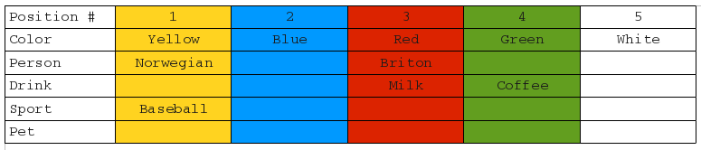
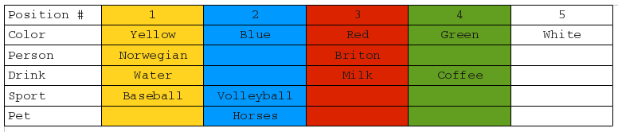
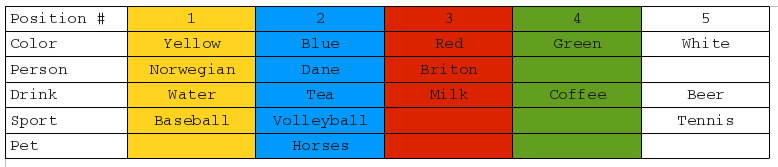
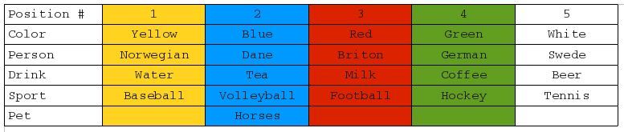
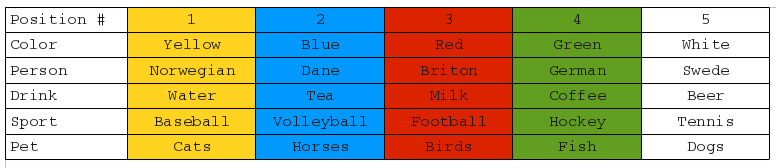

This puzzle comes in many guises, this is one of them.
Problem
Five people of different ethnic backgrounds - a Briton, a Dane, a Swede, a Norwegian and a German - live in a row of five houses each of which is painted one of five different colors - blue, red, green, yellow and white. Each person lives in only one house, owns only one type of pet, drinks only one type of drink and plays only one type of sport.
The drinks are - tea, coffee, milk, water, beer.
The pets are - horses, birds, dogs, cats and fish.
The sports are - baseball, volleyball, football, hockey and tennis.
Given the following fifteen initial facts:
\(f1:\) The Briton lives in the red house
\(f2:\) The Swede owns dogs
\(f3:\) The Dane drinks tea
\(f4:\) The green house is on the left of the white house
\(f5:\) The owner of the green house drinks coffee
\(f6:\) The owner who plays football owns birds
\(f7:\) The owner of the yellow house plays baseball
\(f8:\) The owner of the center house drinks milk
\(f9:\) The Norwegian lives in the first house
\(f10:\) The owner who plays volleyball lives next to the one who has
cats
\(f11:\) The owner who keeps horses lives next to the one who plays
baseball
\(f12:\) The owner who plays tennis drinks beer
\(f13:\) The German plays hockey
\(f14:\) The Norwegian lives next to the blue house
\(f15:\) The owner who plays volleyball has a neighbor who drinks
water
Answer the following question: who owns the fish?
To make sure that this problem has only one solution derived at by pure logic without any guessing let us disambiguate the following:
- \(f4\) means immediately on the left
- \(f10, \; f11, \; f14\) and \(f15\) all mean immediately on either left or right
Solution
We are given five items - houses - each of which has five attributes attached to it:
We also have the sixth attribute - an ordinal position or number of a house but we will keep this attribute out of the above mix since we will use it to make each house unique or distinct, only once, by arbitrarily assigning house numbers in the traditional left to right fashion: the left-most or the first house will be the house number \(1\), the middle or center house will be the house number \(3\) and the right-most or the last house will be the house number \(5\).
The order in which the remaining attributes are distributed across the houses is very important - whether, say, the first house is owned by a Swede or a Briton makes all the difference.
It follows then that five unique individuals, for example, can be distributed across five uniquely numbered houses in:
$$5! = 120$$ways.
Since the choices of the remaining attributes do not depend on the outcome of the selection of an individual attached to a house, from the Fundamental Multiplication Counting Principle it follows that five unique pets, five unique drinks, five unique sports and five unique colors distributed across five uniquely numbered houses generate a total of:
$$5! \times 5! \times 5! \times 5! \times 5! = (5!)^5 =$$ $$30,517,578,125$$possible arrangements.
One, brute force, way to attempt to solve this problem is to generate all these arrangements and then check each one against the initial facts. An arrangement of attributes that satisfies all the initial facts is the right one and from that arrangement we can tell who owns the fish.
If we write a computer program that is capable of testing \(10,000\) arrangements per second then it will take about \(35\) days to find the answer which is reasonable - on a faster computer it, in theory, could be done in about \(3.5\) days or even in about \(8\) hours.
Let us, however, see if we can solve this problem manually - by using the following elimination algorithm. We will scan the list of initial facts for clues in order to make a useful deduction which we will designate as \(d_1, d_2, d_3\), etc. Once such a deduction is made we shall add this deduction to the bottom of the list and repeat the process again until the problem is, hopefully, solved since the number of constraint, we anticipate, should constantly grow - each deduction should eliminate some number of choices for a given attribute so that eventually only one possible value for an attribute in question remains.
While looking for clues we will use the idea perfected by the detectives - if a suspect keeps showing up multiple times in multiple places then he/she deserves a closer inspection. Consequently, if we come across a value of an attribute, German, red, tennis, birds and the like, mentioned in the list more than once then we will try to use that value first to make a useful deduction before moving on.
What follows is the record of my solution - the order of your deductions may be different but the result should be the same.
We shall use the following convention to record the deductions: on the left hand side of the equal sign we shall put the sum of all the facts from which the new deduction, recorded on the right hand side of the equal sign, follows. For example:
$$f_4 = d_1$$is read:
from the initial fact number four follows the deduction number one because ...
The explanation of why this particular deduction follows from this set of true statements is given in the paragraph right after.
\(f4 = d1\)
The \(\#1\) house is not white: by definition no other house can be positioned to the left of the first house.
\(f4 = d2\)
The \(\#5\) house is not green: by definition no other house can be positioned to the right of the last house.
\(f5 + f8 = d3\)
The \(\#3\) house is not green: because the drinks do not match, coffee \(\not =\) milk, the color and the ordinal position of the house can not match either.
\(f9 + f14 = d4\)
The \(\#2\) house is blue: the first house's only immediate neighbor, on its right, can only be a house \(\#2\) by its ordinal position. This deduction assigns the blue color to its absolute position. It also eliminates this position as a choice for all the remaining colors - red, green, yellow and white houses are not \(\#2\).
\(d4 = d5\)
None of the \(\#1, \#3, \#4\) and \(\#5\) houses are blue.
\(f1 + f9 = d6\)
The \(\#1\) house is not red: because the ethnic backgrounds do not match, Briton \(\not =\) Norwegian, the color and the ordinal position of a house can not match either.
\(d4 + f4 = d7\)
The \(\#1\) house is not green: the house immediately to the right of the green house is white and the house immediately to the right of the first house is blue. Because the colors of the right neighbors do not match, blue \(\not =\) white, the ordinal position, \(\#1\), and the color, green, can not match either.
\(d1 + d5 + d6 + d7 = d8\)
The \(\#1\) house is yellow: this is the only color left for the first house. All the other house color choices for that ordinal position have been eliminated.
\(d2 + d3 + d4 + d8 = d9\)
The green house is \(\#4\): this is the only ordinal position left for the green house. All the other position choices for that color have been eliminated.
\(f4 + d9 = d10\)
The white house is \(\#5\): this is the only ordinal position left for the white house. All the other ordinal position choices for that color have been eliminated.
\(d4 + d8 + d9 + d10 = d11\)
The red house where the Briton lives is \(\#3\): this is the only color left for the third (center) house. All the other color choices for that ordinal position have been eliminated.
\(f1 + f8 + d11 = d12\)
The Briton drinks milk: because the ordinal position and the color of the house match, the center house is red, so do the owner and the drink.
\(f9 + d8 + f7 = d13\)
The Norwegian plays baseball: because the ordinal position and the color of the house match, the first house is yellow, so do the owner and the sport.
Two attributes - the ordinal position and the color - are now fully determined. Considering all the deductions we have made so far here is the state of the problem:

\(f11 + d13 = d14\)
The owner of the blue house keeps horses: horses can be on either left or right side of the person who plays baseball. That person lives in the very first house. By its definition the first house has no immediate neighbor on its left - only on its right. And that is the blue house \(\#2\).
\(f3 = d15\)
The Norwegian does not drink tea: because the ethnic backgrounds do not match, Dane \(\not =\) Norwegian, the drinks can not match either.
\(f5 + d8 = d16\)
The Norwegian does not drink coffee: because the colors do not match, yellow \(\not =\) green, the drinks can not match either.
\(f8 + f9 = d17\)
The Norwegian does not drink milk: because the ordinal positions of the houses do not match, first \(\not =\) third (center), the drinks can not match either.
Another reasoning: milk is the drink at the red house which is not yellow. Since the colors do not match the drinks can not match either.
And another: since milk is the drink at the red (center) house it can not be the drink at any, yellow including, remaining house color (position).
\(d13 + f12 = d18\)
The Norwegian does not drink beer: because the sports do not match, tennis \(\not =\) baseball, the drinks can not match either.
\(d15 + d16 + d17 + d18 = d19\)
The Norwegian drinks water: that is the only drink left for the Norwegian. All the other drink choices for that person have been eliminated.
\(d19 + f15 = d20\)
The owner of the blue house plays volleyball: the volleyball player can be on either left or right side of the house whose owner drinks water. Because that person lives in the first house he has only one neighbor - on its right side - the owner of the blue house who plays volleyball:

\(f12 + d19 + d12 + f5 + d20 = d21\)
The owner of the white house drinks beer: because the drinks do not match, beer \(\not =\) water \(\not =\) milk \(\not =\) coffee, the colors, yellow, red and green, can not match either and are eliminated. Because the sports do not match, tennis \(\not =\) volleyball, the only remaining house color choice, blue, is also eliminated.
\(d21 + f12 = d22\)
The owner of the white house plays tennis: because the drinks match, beer \(=\) beer, the color and the sport must match also.
\(d19 + d12 + f5 + d21 = d23\)
The owner of the blue house drinks tea: that is the only drink left for the person who lives in the blue house. All the other drink choices for the owner of that house have been eliminated.
\(d23 + f3 = d24\)
The Dane lives in the blue house: because the drinks match, tea \(=\) tea, the owner and the color of the house must match also:

\(d8 + d24 + d11 + d22 + f13 = d25\)
The hockey-playing German lives in the green house: because the ethnic backgrounds do not match, German \(\not =\) Norwegian \(\not =\) Dane \(\not =\) Briton, the house colors and ordinal positions can not match either and are eliminated. Because the sports do not match, tennis \(\not =\) hockey, the remaining color, white, is also eliminated.
\(d8 + d24 + d11 + d25 = d26\)
The Swede lives in the white house: this is the only ethnic background choice left for the owner of the white house. All the other ethnic background choices for the owner of the house of that color have been eliminated.
\(d13 + d20 + d22 + d25 = d27\)
The Briton plays football: this is the only sport choice left for the Briton. All the other sport choices for that person have been eliminated:

\(f6 + d27 = d28\)
The Briton raises birds: because the sports match, football \(=\) football, the owner and the pet must match also.
\(d28 + f10 = d29\)
The Norwegian keeps cats: the cat owner can be on either left or right side of the volleyball player. The right neighbor of the volleyball player raises birds and because the pets do not match, birds \(\not = \) cats, that neighbor is eliminated.
\(d29 + d14 + d28 + f2 = d30\)
The German owns the fish: that is the only pet choice left for the German. All the other pet choices for that person have been eliminated:
So the answer is: the German who lives in the number four green house, drinks coffee and plays hockey owns the fish.
\(\blacksquare\)